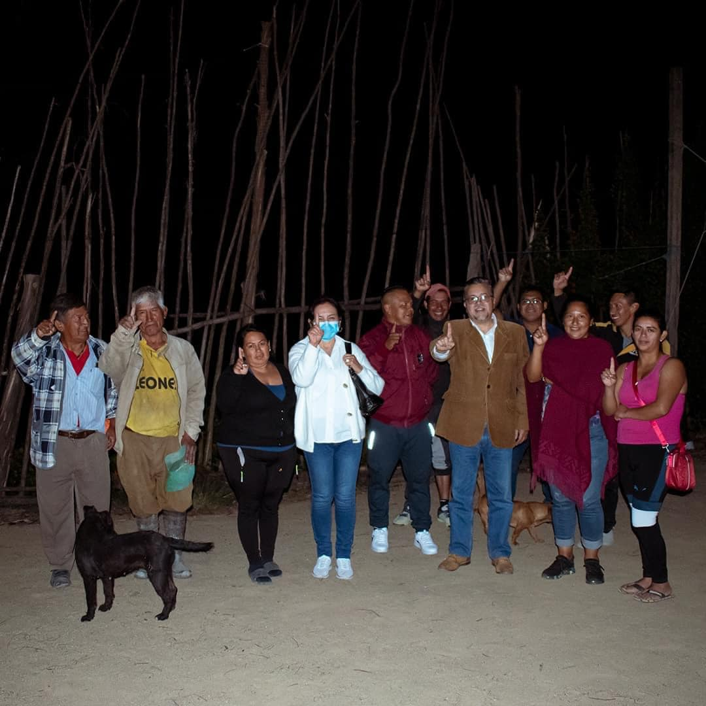
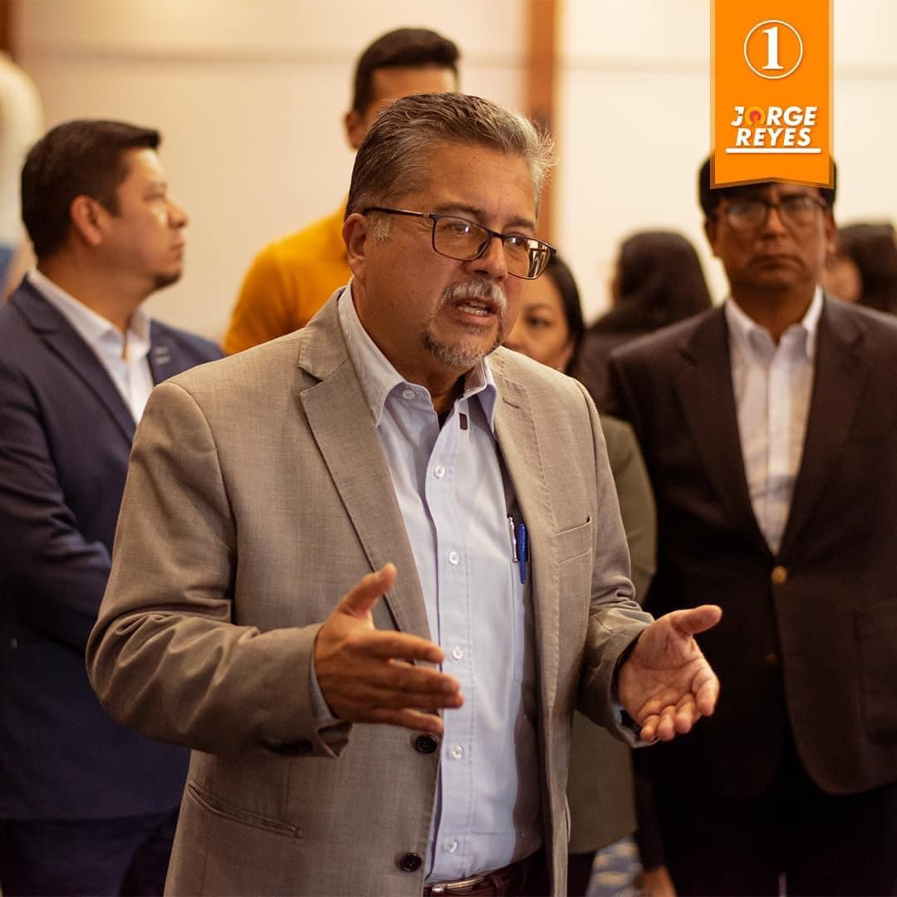
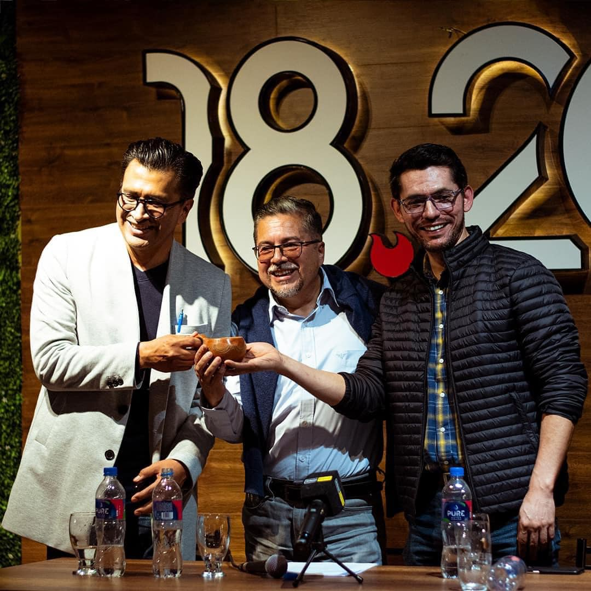

Mi Legado en Loja
Una vida dedicada al servicio de nuestra comunidad

Trayectoria Política
Comprometido con el desarrollo de Loja, he trabajado incansablemente para mejorar la calidad de vida de nuestros ciudadanos a través de políticas públicas efectivas y un liderazgo transparente.
- Experiencia en gestión pública
- Liderazgo comprobado
- Resultados tangibles
Logros y Reconocimientos
A lo largo de mi carrera, he recibido numerosos reconocimientos por mi labor en beneficio de la comunidad lojana, destacando siempre por mi compromiso con la excelencia y el servicio.
Premio al Mérito Ciudadano
Reconocimiento por contribuciones destacadas al desarrollo de la ciudad.
Medalla al Mérito Educativo
Por la implementación de programas educativos innovadores.


Proyectos Destacados
He liderado numerosas iniciativas que han transformado positivamente nuestra ciudad, mejorando la infraestructura, educación y calidad de vida de los lojanos.
Modernización del Centro Histórico
Recuperación y puesta en valor de espacios públicos emblemáticos.
Programa de Vivienda Social
Acceso a vivienda digna para familias de escasos recursos.
Lo que dicen los lojanos
"El Dr. Reyes ha demostrado un compromiso inquebrantable con nuestra ciudad. Su trabajo ha mejorado significativamente nuestra calidad de vida."
"Su visión para Loja es inspiradora. Gracias a su liderazgo, hemos visto avances significativos en educación y desarrollo urbano."